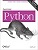

Date: Fri Jan 25 15:04:09 2013
This certifies that:
Bob Smith
has survived the massive tome:
Learning Python 5th Edition
and is now entitled to all privileges thereof, including the right to proceed on to learning how to develop Web sites, desktop GUIs, scientific models, and assorted Apps, with the possible assistance of follow-up applications books such as Programming Python (shameless plug intended).
--Mark Lutz, Instructor
(Note: certificate void where obtained by skipping ahead.)
|  | Book support site |